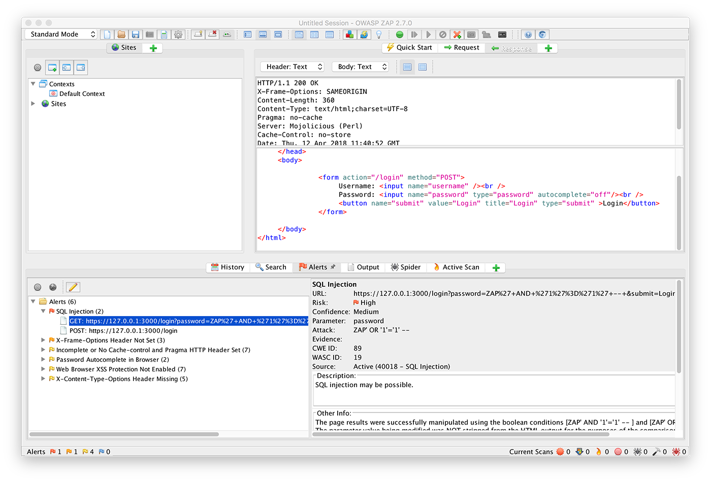
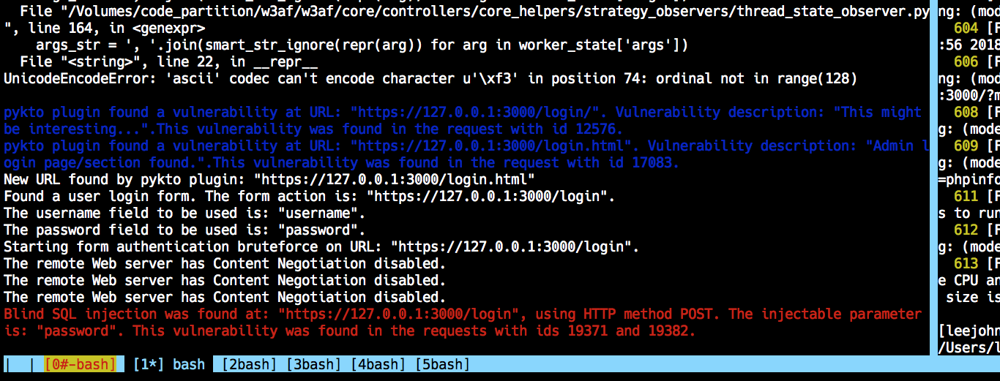
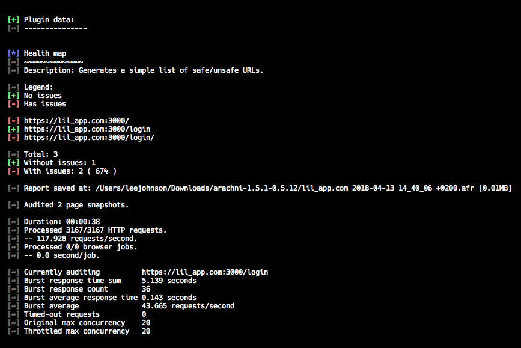
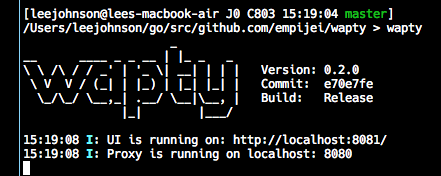
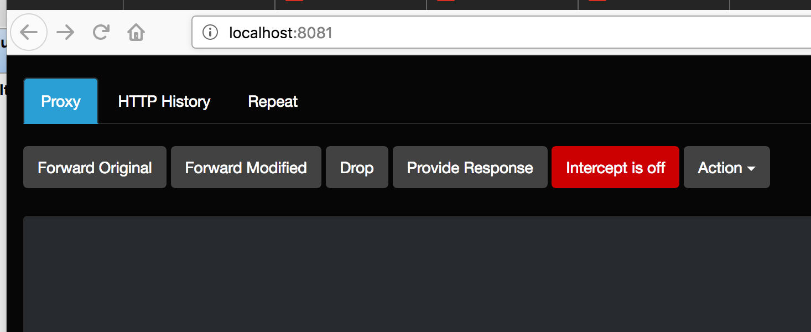

class: center, middle # Find and Fix Your Web Security Vulnerabilities With Burp Scanner Lee Johnson (LEEJO / leejo / lee@humanstate.com) --- ## Should you scan your app for vulnerabilities? -- * Is it public facing: Yes -- * Is it internal only: Yes -- * Is it a single use private app only accessible by you: Why not? ??? --- ## How often should you scan? * Anyone here who has a public facing app that has never been scanned? ??? If so, first thing you do when you get back is set this up! -- * We get scanned externally once a year * And self scan at least twice a year -- * Also scan on any major refactoring or major feature additions -- * Automating this would be the end goal ??? Haven't got around to doing this yet, and perhaps not so much value as comprehensive scans take a long time (hours) --- ## OWASP (Open Web App Security Project) Top Ten 2017 ??? OWASP Top Ten was updated last year (2017), which was the first update in four years -- * Injection -- * Broken Authentication ??? Permitting weak passwords, allowing brute force attacks, not hashing + salting passwords, not invalidating sessions, etc -- * Sensitive Data Exposure ??? Not using HTTPS, using weak cryptographic algorithms -- * XML External Entities (XXE) ??? Not sanitising external references (we might see this in JSON-Schema soon?). Typical DOS attack example below -- ``` <!ENTITY xxe SYSTEM "file:///dev/random" >]> ``` -- * Broken Access Control ??? User manipulates URLs to get access: primary keys in URL, JWTs, etc -- * Security Misconfiguration ??? Unnecessary ports open, OOTB default accounts enabled, deps not up to date or patched, etc -- * Cross-Site Scripting (XSS) -- * Insecure Deserialization -- * Using Components with Known Vulnerabilities -- * Insufficient Logging & Monitoring ??? Not knowing you've been hacked - audit failed logins, checks warnings, etc That's the ten most serious from about one hundred types of attack. --- ## Finding Vulnerabilities with Burp Scanner * Burp Suite is a commercial closed sourced product * Costs about €300 per single licence -- * Comprehensive and configurable * Updated frequently -- * Industry "standard" ??? When we've been externally scanned it's the one they use -- * I have no affiliation with them, I just think it's a good product -- * Open source alternatives are available, more on those later --- ## Live Demo! --- ## Alternatives to Burp Suite * https://www.owasp.org/index.php/OWASP_Zed_Attack_Proxy_Project * https://github.com/andresriancho/w3af * https://github.com/Arachni/arachni * https://github.com/empijei/wapty * "We are working to make wapty a worthy replacement for Burp, but we are not there yet" * https://github.com/sullo/nikto * "Nikto is a web server assessment tool. It is designed to find various default and insecure files, configurations and programs on any type of web server." * And more... --- #### [OWASP ZAP](https://www.owasp.org/index.php/OWASP_Zed_Attack_Proxy_Project) (Zed Attack Proxy Project)  ??? Java Seems very easy to use, not as configurable as Burp? Trivial to install and run. --- #### [w3af](http://w3af.org/) Example script: ``` plugins output console,text_file output output config text_file set output_file output-w3af.txt set verbose True back output config console set verbose False back crawl all, !bing_spider, !google_spider, !spider_man crawl grep all grep audit all audit bruteforce all bruteforce back target set target https://127.0.0.1:3000/ back start ``` ??? Python (2 only) Couldn't get the GUI running due to way out of date deps Console works OK though, and easily script-able using examples! --- #### [w3af](http://w3af.org/)  ``` [leejohnson@lees-macbook-air J0 C725 14:25:11 master] /Users/leejohnson/working/w3af > fgrep 'Blind' output-w3af.txt [Fri Apr 13 14:19:23 2018 - vulnerability] Blind SQL injection was found at: "https://127.0.0.1:3000/login", using HTTP method POST. The injectable parameter is: "password". This vulnerability was found in the requests with ids 19371 and 19382. [leejohnson@lees-macbook-air J0 C726 14:25:32 master] /Users/leejohnson/working/w3af > fgrep 19371 !$ [Fri Apr 13 14:19:22 2018 - debug] POST https://127.0.0.1:3000/login with data: "username=John8212&password=46' OR '46'='46' OR '46'='46..." returned HTTP code "200" (id=19371,from_cache=0,grep=0,rtt=0.06,did=2kNq5UfD) ``` --- #### [Arachni](http://www.arachni-scanner.com/) Simple scan: ``` ./bin/arachni https://lil_app.com:3000/ ``` --- #### [Arachni](http://www.arachni-scanner.com/) Finds:  ??? Ruby Doesn't support Loopback interfaces (just alias a host to 127.0.0.1 in /etc/hosts) Didn't find SQL injection points! Maybe it needs more configuration out of the box? --- #### [Wapty](https://github.com/empijei/wapty) To install: ``` export GOPATH=/Users/leejohnson/go export PATH=$GOPATH/bin go get github.com/empijei/wapty cd $GOPATH/src/github.com/empijei/wapty make installdeps make make install wapty ```  ??? Go I got this running, made sure to follow the instructions and use the proxy --- #### [Wapty](https://github.com/empijei/wapty)  ??? But couldn't get it to do anything. Note there is no target tab? They do say that it's "not there yet", so one to watch i guess --- #### [Nikto](https://github.com/sullo/nikto) ``` [leejohnson@lees-macbook-air J0 C824 15:34:32 master] /Users/leejohnson/working/nikto/program > perl nikto.pl -h https://127.0.0.1:3000 -C all - Nikto v2.1.6 --------------------------------------------------------------------------- + Target IP: 127.0.0.1 + Target Hostname: 127.0.0.1 + Target Port: 3000 --------------------------------------------------------------------------- + SSL Info: Subject: ... Ciphers: ... Issuer: ... + Start Time: 2018-04-13 15:34:43 (GMT2) --------------------------------------------------------------------------- + Server: Mojolicious (Perl) *+ The X-XSS-Protection header is not defined.... *+ The site uses SSL and the Strict-Transport-Security HTTP header is not defined. *+ The X-Content-Type-Options header is not set.... + Hostname '127.0.0.1' does not match certificate's names: localhost + OSVDB-3092: /login/: This might be interesting... + /login.html: Admin login page/section found. + 26409 requests: 0 error(s) and 7 item(s) reported on remote host + End Time: 2018-04-13 15:37:46 (GMT2) (183 seconds) --------------------------------------------------------------------------- ``` ??? Perl Pretty configurable Didn't find SQL injection points! Maybe it needs more configuration out of the box? False positives? --- ## Questions? More info: * [Burp Suite](https://portswigger.net/burp) * [OWASP](https://www.owasp.org) * [OWASP 2017 Top Ten](https://www.owasp.org/index.php/Category:OWASP_Top_Ten_2017_Project)